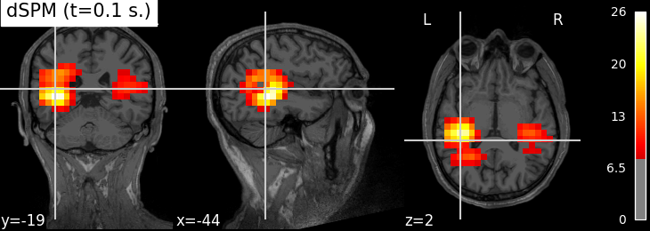

Note
Click here to download the full example code
Compute MNE-dSPM inverse solution on evoked data in volume source space¶
Compute dSPM inverse solution on MNE evoked dataset in a volume source space and stores the solution in a nifti file for visualisation.
Out:
Reading /home/circleci/mne_data/MNE-sample-data/MEG/sample/sample_audvis-ave.fif ...
Read a total of 4 projection items:
PCA-v1 (1 x 102) active
PCA-v2 (1 x 102) active
PCA-v3 (1 x 102) active
Average EEG reference (1 x 60) active
Found the data of interest:
t = -199.80 ... 499.49 ms (Left Auditory)
0 CTF compensation matrices available
nave = 55 - aspect type = 100
Projections have already been applied. Setting proj attribute to True.
Applying baseline correction (mode: mean)
Reading inverse operator decomposition from /home/circleci/mne_data/MNE-sample-data/MEG/sample/sample_audvis-meg-vol-7-meg-inv.fif...
Reading inverse operator info...
[done]
Reading inverse operator decomposition...
[done]
305 x 305 full covariance (kind = 1) found.
Read a total of 4 projection items:
PCA-v1 (1 x 102) active
PCA-v2 (1 x 102) active
PCA-v3 (1 x 102) active
Average EEG reference (1 x 60) active
Noise covariance matrix read.
11271 x 11271 diagonal covariance (kind = 2) found.
Source covariance matrix read.
Did not find the desired covariance matrix (kind = 6)
11271 x 11271 diagonal covariance (kind = 5) found.
Depth priors read.
Did not find the desired covariance matrix (kind = 3)
Reading a source space...
[done]
1 source spaces read
Read a total of 4 projection items:
PCA-v1 (1 x 102) active
PCA-v2 (1 x 102) active
PCA-v3 (1 x 102) active
Average EEG reference (1 x 60) active
Source spaces transformed to the inverse solution coordinate frame
Preparing the inverse operator for use...
Scaled noise and source covariance from nave = 1 to nave = 55
Created the regularized inverter
Created an SSP operator (subspace dimension = 3)
Created the whitener using a noise covariance matrix with rank 302 (3 small eigenvalues omitted)
Computing noise-normalization factors (dSPM)...
[done]
Applying inverse operator to "Left Auditory"...
Picked 305 channels from the data
Computing inverse...
Eigenleads need to be weighted ...
Computing residual...
Explained 59.7% variance
Combining the current components...
dSPM...
[done]
# Author: Alexandre Gramfort <alexandre.gramfort@telecom-paristech.fr>
#
# License: BSD (3-clause)
from nilearn.plotting import plot_stat_map
from nilearn.image import index_img
from mne.datasets import sample
from mne import read_evokeds
from mne.minimum_norm import apply_inverse, read_inverse_operator
print(__doc__)
data_path = sample.data_path()
fname_inv = data_path + '/MEG/sample/sample_audvis-meg-vol-7-meg-inv.fif'
fname_evoked = data_path + '/MEG/sample/sample_audvis-ave.fif'
snr = 3.0
lambda2 = 1.0 / snr ** 2
method = "dSPM" # use dSPM method (could also be MNE or sLORETA)
# Load data
evoked = read_evokeds(fname_evoked, condition=0, baseline=(None, 0))
inverse_operator = read_inverse_operator(fname_inv)
src = inverse_operator['src']
# Compute inverse solution
stc = apply_inverse(evoked, inverse_operator, lambda2, method)
stc.crop(0.0, 0.2)
# Export result as a 4D nifti object
img = stc.as_volume(src,
mri_resolution=False) # set True for full MRI resolution
# Save it as a nifti file
# nib.save(img, 'mne_%s_inverse.nii.gz' % method)
t1_fname = data_path + '/subjects/sample/mri/T1.mgz'
# Plotting with nilearn ######################################################
plot_stat_map(index_img(img, 61), t1_fname, threshold=8.,
title='%s (t=%.1f s.)' % (method, stc.times[61]))
Total running time of the script: ( 0 minutes 4.679 seconds)
Estimated memory usage: 650 MB